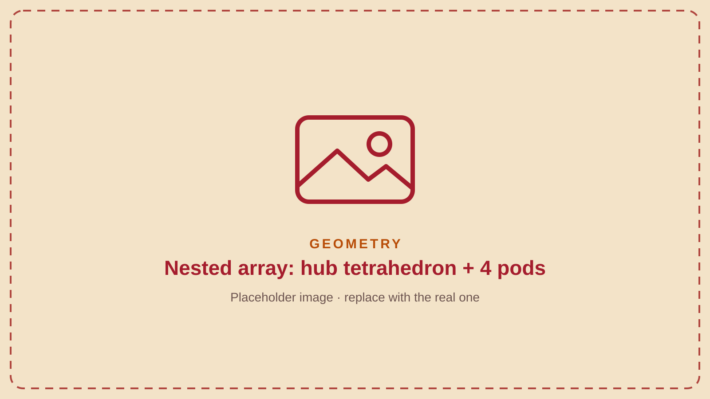

Built prototype · the “nested array”
8Microphones, two boards, one clock
Built · sea-level tested
| Hub core | 0.30 m regular tetrahedron of 4 microphones on a 0.8 m mast |
| Outrigger pods | 4 pods on unequal arms of 1.1 / 1.7 / 2.3 / 3.1 m |
| Microphones | 8 × INMP441 I²S MEMS, digitised at the capsule (no analog cable) |
| Boards | 2 × ESP32-S3 (4 capsules each) on a shared clock |
| Materials | Al 6061-T6 frame and enclosure · graphene clear coat · closed-cell PU insulation foam |
No performance figures are claimed for the graphene coat.

